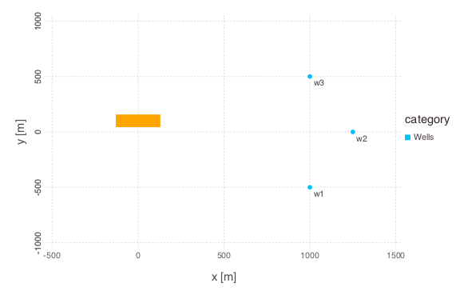

Examples
Contaminant Source Termination
All the figures below are generated using examples/bigdt/source_termination.jl.
Model setup

Contaminant source (orange rectangle)
3 monitoring wells
We know some of the properties of the source (location, shape, strength, release start time, etc.). We know concentrations observed at the 3 monitoring wells (10 annual measurements per well from 2006-2015). We do NOT know:
* groundwater flow velocity
* longitudinal dispersion of the plume
Inverse modeling can be used to estimate these parameters. However, there are uncertainties with the inverse model estimates. Because of these uncertainties, we perform a decision analysis.
Uncertainties
Probabilistic uncertainties
* prior probability distributions of unknown model parameters (groundwater flow velocity and longitudinal plume dispersion)
* measurement errors of the observed concentrations (assumed to be normally distributed with zero mean and predefined standard deviation; the standard deviation is equal to the reciprocal of observation weights)
* posterior probabilities distributions of unknown model parameters (informed through Bayes' theorem accounting for the impact of observed concentrations to constrain the prior belief about the model parameter uncertainties represented is prior probability distributions)
Non-probabilistic uncertainties
* conceptual uncertainties in the applied model
* uncertainties in the statistical model characterizing the discrepancies (residuals) between model predictions and concentration observations; typically the discrepancies (residuals) are considered to be normally distributed with some fixed variance (e.g. in the case of Bayesian decision analysis); the Information-gap decision approach allows for (1) deviations from the assumption of normality or (2) deviations from the assumed variance.
Goal
Future concentrations at monitoring well w2 (from 2016 till 2025) are less than MCL of 2500 ppb
Scenarios
- Terminate the source in 2015 (now)
- Terminate the source in 2020 (in 5 years)
- Terminate the source in 2025 (in 10 years)
- Terminate the source in 2030 (in 15 years)
Task
Evaluate the robustness of decision scenarios to keep future concentrations at w2 being below 2500 ppb with respect to the uncertainties in the model and the statistical methods.
Method
Bayesian Information Gap Decision Theory (BIG-DT).
- O'Malley, D., and V. V. Vesselinov. "Bayesian‐information‐gap decision theory with an application to CO2 sequestration." Water Resources Research 51.9 (2015): 7080-7089.
- Grasinger, Matthew, et al. "Decision analysis for robust CO 2 injection: Application of Bayesian-Information-Gap Decision Theory." International Journal of Greenhouse Gas Control 49 (2016): 73-80.
- O'Malley, D., and V. V. Vesselinov. "A combined probabilistic/nonprobabilistic decision analysis for contaminant remediation." SIAM/ASA Journal on Uncertainty Quantification 2.1 (2014): 607-621.
- O'Malley, D., and V. V. Vesselinov. "Groundwater remediation using the information gap decision theory." Water Resources Research 50.1 (2014): 246-256.
Horizon (level) of uncertainty
Horizon (level) of uncertainty is a non-negative index that defines (1) a set of possible concentrations at w2 (including possibilities not predicted by the model) and (2) a set of likelihood functions for the discrepancy (residual) between the model prediction and the observation.
The likelihood functions differ in the variance. The set of possible concentrations at w2 is the set of concentrations whose relative error with respect to the model is less than the horizon of uncertainty. The set of variances is
${ σ^2: \frac{σ^20}{10^h} ≤ σ^2 ≤ 10^h σ^20 } $
where \(σ^20\) is the nominal variance (500; the nominal standard deviation \(σ0\) is ~22) and \(h\) is the horizon of uncertainty. As the index increases, these sets become bigger, allowing for more possibilities.
Robustness
The horizon (level) of uncertainty at which the maximum acceptable probability of failure is reached
Results
Figures representing robustness of model predictions:
(a) Complete robustness curves

(b) Zoomed-in robustness curves

Discussion
We nominally expect that terminating the source at any of these dates (2015, 2020, 2025 or 2030) will probably ensure that future concentrations at w2 remain below 2500 ppb. This is because the maximum probability of failure is almost zero when the horizon of uncertainty is zero. The zero-horizon of uncertainty estimate also corresponds to the result obtained using a Bayesian decision analysis that does not account for non-probabilistic (information gap) uncertainties.
On the other hand, we are somewhat vulnerable to uncertain outcomes that deviate from our nominal case. The sharp rise in the maximum probability of failure for the 2025 and 2030 scenarios when the horizon (level) of uncertainty is approximately 0.25 (25%) indicates that, e.g., if the model is underestimating the actual concentrations at the site by 25%, the probability of failure could be quite high. Another possibility is that undesirable outcomes that appear unlikely with the nominal variance appear more likely with some another possible variance within a horizon of uncertainty of 0.25.
Here we assume that the maximum acceptable probability of failure (vertical axis in the figure above) is equal to 0.05 (5%), and base our decision analysis on where each of the curves reaches 5% maximum probability of failure. In this case, the scenarios terminating the source in 2025 and 2030 produce similar robustness; i.e., if we are willing to wait until 2025, then we may as well wait until 2030. At this level of risk (5%), terminating the source in 2015 and 2020 provides additional robustness. However, it may not be enough to merit action in the short term.
Based on the robustness of the model predictions the decision makers can decide the course of action. Their decision can also rely on (1) risk assessment (e.g., differences in the exposure times depending on when the source is terminated) and (2) financial constraints (e.g., costs associated with the source termination over different time frames).
Model
Analytical solution of groundwater contaminant transport assuming Fickian dispersion (coded in Mads.jl). The contaminant source is assumed to have a Gaussian shape in space; the rectangle sides in the figure at the beginning represent the standard deviation along the \(x\) and \(y\) axes; the contaminant is released in 1985.
The presented analyses required ~4,000 forward model runs (~1,000 per scenario). The analysis took about 5 minutes in a serial mode using the Julia version of Mads. The runs are independent and can be computed efficiently in parallel.